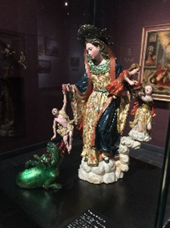
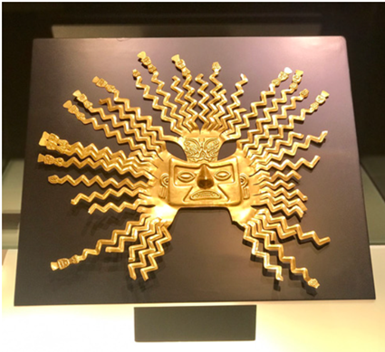
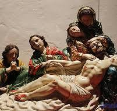
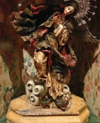
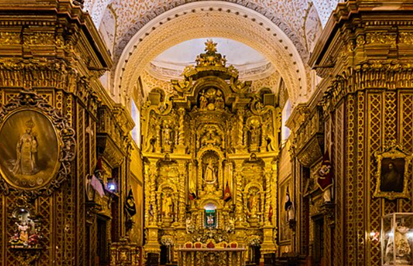
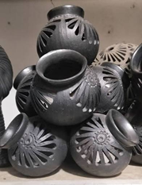

Virgen de la Luz
Patrimonio Cultural del Ecuador
Desde la cerámica precolombina de la cultura Tolita hasta el expresionismo de Guayasamín, explora la riqueza visual y la identidad de un pueblo plasmada en lienzos, esculturas y murales.

Colección Digital
Explora nuestra colección de obras representativas del arte ecuatoriano.
Cargando obras...
Cargando colección...
Siglos XVI - XVIII
Durante la época colonial, el arte ecuatoriano recibió una importante influencia de los estilos europeos introducidos durante la colonización. Iglesias y catedrales fueron decoradas con pinturas y esculturas religiosas inspiradas principalmente en el barroco y el rococó.
La participación de artistas indígenas y mestizos permitió fusionar elementos europeos con características culturales propias de la región, dando origen a una de las manifestaciones artísticas más importantes del Ecuador: la Escuela Quiteña.
1720 - 1796
Escultor indígena y uno de los máximos representantes de la Escuela Quiteña. El nombre Caspicara significa "cara de palo". Entre sus obras representativas se encuentran la Virgen de la Luz y La Sábana Santa.
1700 - 1773
Pintor, escultor, tallador y platero mestizo especializado en imágenes religiosas. Su obra más reconocida es la Virgen de Quito. También participó en importantes trabajos religiosos como el Retablo Mayor.

Virgen de la Luz

La Sábana Santa

Virgen de Quito

Retablo Mayor

Arte Ancestral
La escultura y la cerámica son manifestaciones artísticas tradicionales del Ecuador que han evolucionado a través de diferentes períodos históricos.
Desde las culturas precolombinas, la cerámica fue utilizada tanto para actividades cotidianas como para expresiones ceremoniales y artísticas. Sus formas, colores y representaciones constituyen importantes testimonios de la identidad de los pueblos ancestrales.
En la actualidad, artesanos ecuatorianos continúan conservando técnicas tradicionales y conocimientos transmitidos entre generaciones.
Explorar GaleríaMi proyecto
Es una plataforma digital orientada a la difusión y visualización del patrimonio artístico ecuatoriano.
El proyecto reúne una colección digital de obras y contenidos relacionados con diferentes etapas y expresiones del arte nacional, facilitando su consulta mediante una experiencia web accesible.
Además de consultar la colección, los usuarios registrados pueden contribuir publicando nuevas obras, administrar sus publicaciones y ampliar progresivamente el contenido disponible en la plataforma.